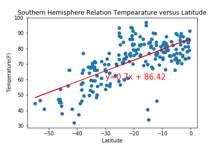

Max Temperature

As expected, the weather becomes significantly warmer as one approaches the equator (0 deg. Latitude). More interestingly, however, is the fact that the southern hemisphere tends to be warmer this time of year than the northern hemisphere. This may be due to the tilt of the earth at the time of the year this data was gathered.
When checking liner regression, we found maximum temperature and latitude has strong negative correlation in northern hemisphere.
- R square value is 0.73
- Linear Regression equation is y = 1.03x + 96.37
But, in south hemisphere, maximum temperature and latitude has moderate or little weak positive correlation.
- R square value is 0.46
- Linear Regression equation is y = 0.7x + 86.42


You can check other figures for linear regression in the menu. or by push this link